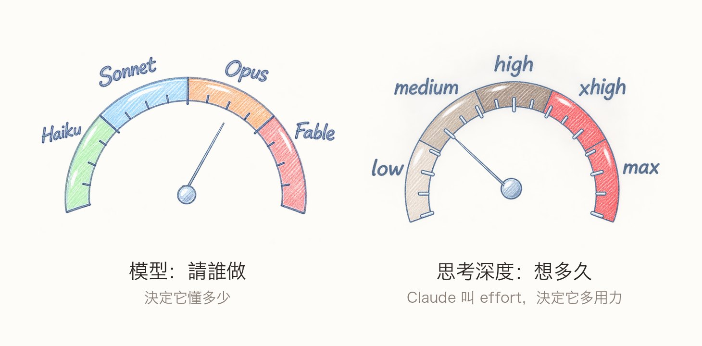
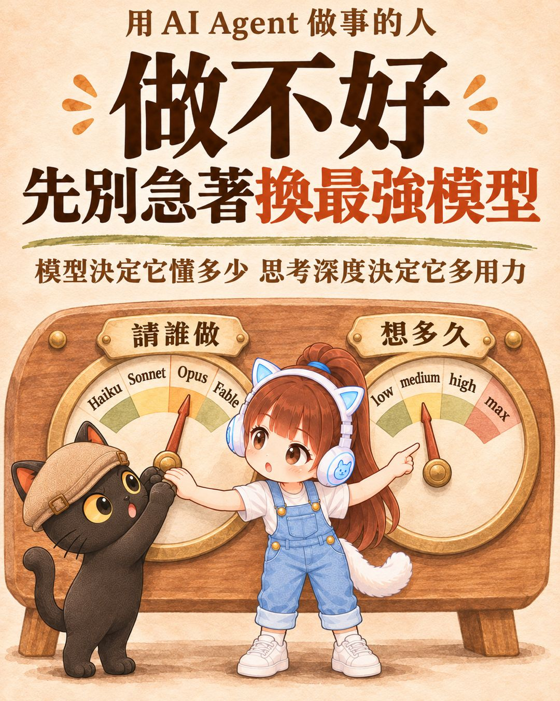
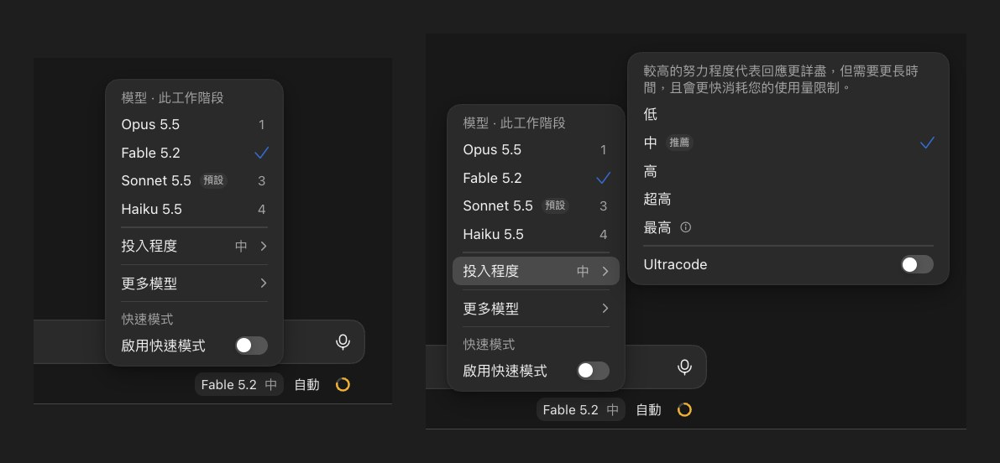
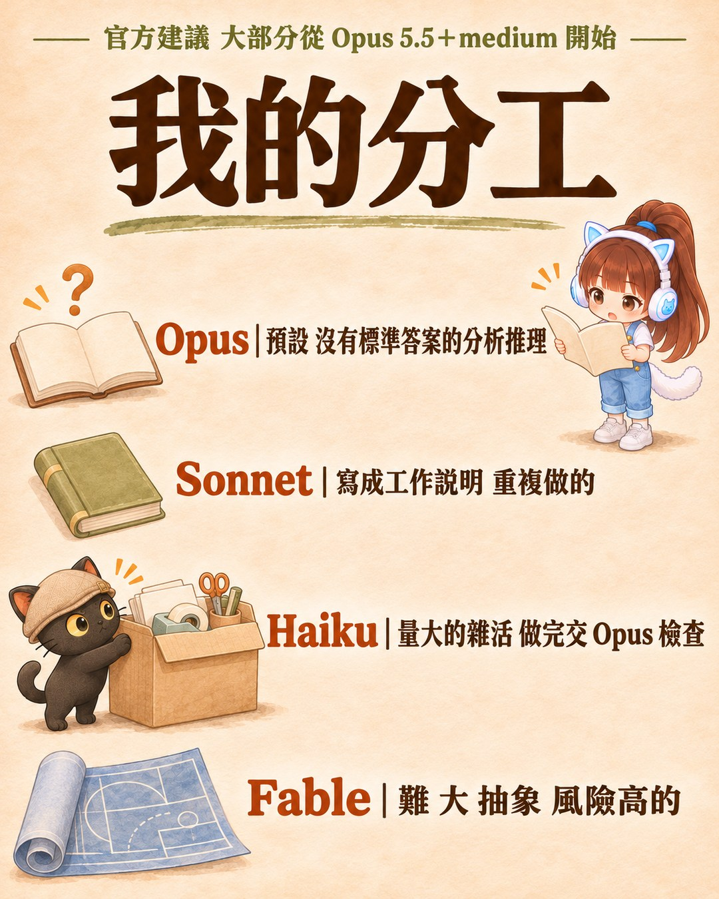
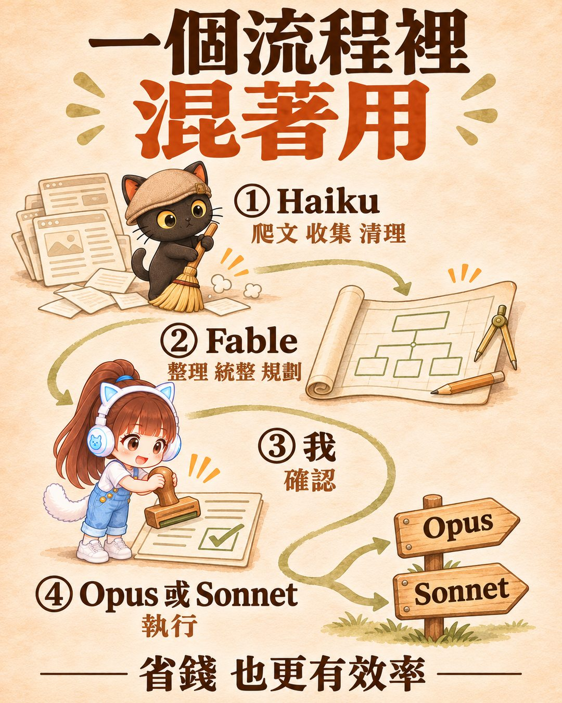
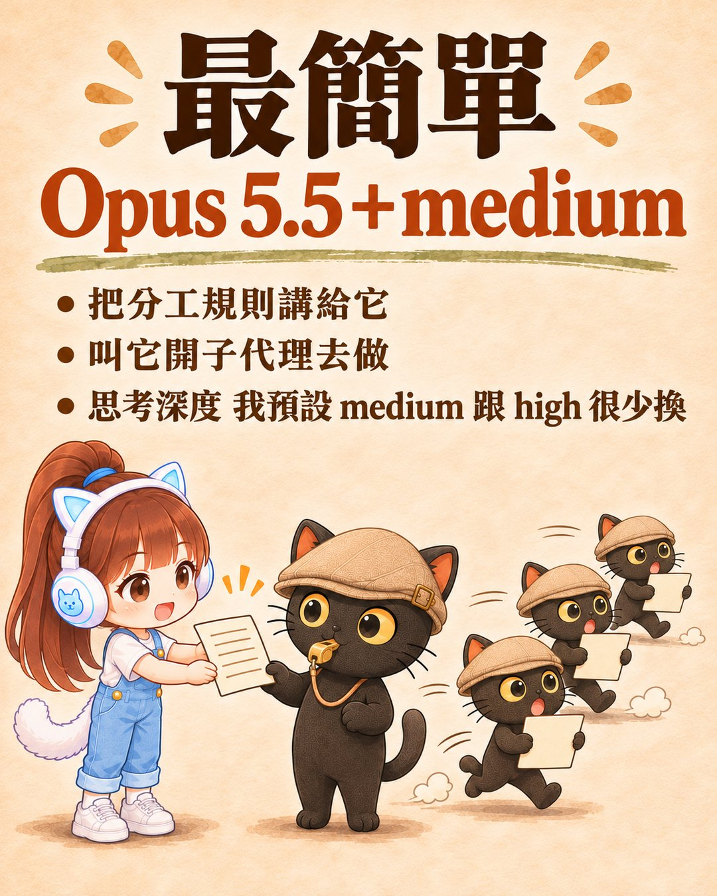
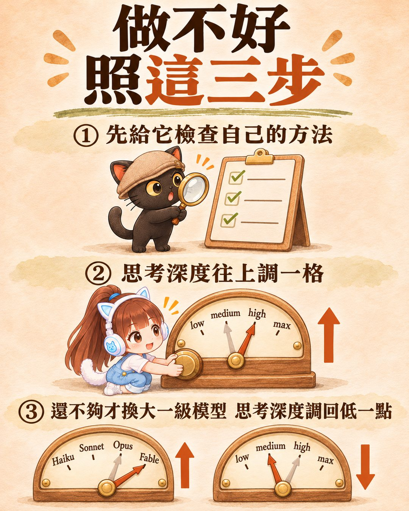
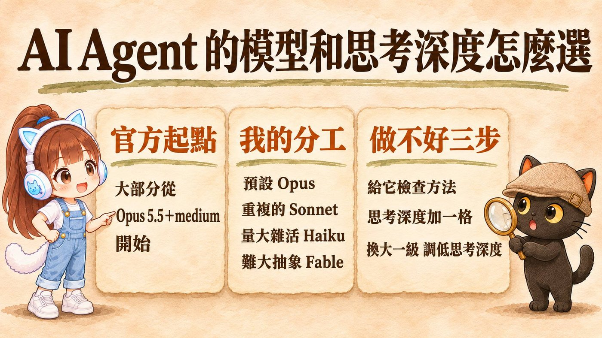

AI 幫你做的東西不夠好，很多人第一個動作是直接換最強的模型。可是 Claude 官方自己寫的選模型指南，列了 11 種工作，建議從最強的 Fable 開始的只有 2 種。
這篇用 Claude 當例子，講 Agent 裡的兩個儀表：模型決定「請誰做」，思考深度決定「想多久」。再拿我自己身為知識工作者的分工，對照官方的建議。ChatGPT、Codex 也是同一套邏輯。
- AI 做出來不夠好，第一個想法就是換最強的模型
- 用 Claude Code、Codex、ChatGPT，看到模型和思考深度兩個選單，不知道怎麼選
- 工作大多是讀文件、做研究、分析，沒有標準答案的知識工作者
- 一句判斷問法：它是不知道，還是不夠努力
- 官方建議的起點，和 11 種工作的對照表
- 我的四個模型分工表，和一段可以直接貼給 AI 的分工交代
- 做出來不夠好時，照順序走的三個步驟
這篇也有影片版，約 8 分鐘，我從頭講一次：
一張圖看懂：選模型要決定兩件事，請誰做、想多久

你可以把它想成 Agent 的儀表板。左邊看你請的是誰，右邊是轉速表，看它多用力。轉速拉越高，跑得越用力，也越耗油，耗的就是你的額度。
左邊那個儀表上，Claude 現在有四個模型，由便宜到貴：Haiku、Sonnet、Opus、Fable。Haiku 最便宜也最快，Fable 最強也最貴。下面的例子和設定都以 Claude Code 為例，ChatGPT、Codex 的對應名稱放在後面的表格。
AI 做得不夠好，先別急著換最強的模型
開頭說的選模型指南，是 Claude 官方的〈Which Claude model should you build with? ↗〉。11 種工作裡，建議從最強的 Fable 開始的只有 2 種；官方的建議是大部分工作先從 Opus 開始。
官方還測過，同一個模型，思考深度從 high 再往上開一格，費用變兩倍半，分數只多 1.4 分。這組數字是官方拿寫程式的考題測的。
所以 Agent 裡「請誰做」跟「想多久」，價格跟效果都差很多。
做不好的時候先問：它是不知道，還是不夠努力？

選模型其實要決定兩件事。第一個是模型，決定它懂多少；第二個是思考深度，Claude 叫 effort，決定它多用力。
官方講得很清楚，思考深度開再高，也不會讓模型多出它本來沒有的知識。
Claude Code、ChatGPT、Codex 的模型和思考深度在哪裡調
各家的名字不一樣，但儀表板上都是這兩個儀表。

像 Claude Code，點下面的模型名稱，上面這一區就是選模型，也就是請誰做；下面的投入程度，就是思考深度，也就是想多久。Codex 預設只看到推理強度的拉桿，拉完之後，點上面的模型名稱，還是可以再選模型。
| 模型（請誰做） | 思考深度（想多久） | |
|---|---|---|
| Claude Code | Haiku、Sonnet、Opus、Fable | effort：low、medium、high、xhigh、max |
| ChatGPT | 模型選單選 GPT-6（免費版預設 GPT-5.6 Luna） | Thinking：Instant、Medium、High、Extra High、Pro（依方案與工作區開放） |
| Codex | /model 看帳號可用的模型 | 推理強度（reasoning effort）：low、medium、high、xhigh、max、ultra（依模型而異） |
三家名字不一樣，其實都是這兩個儀表：Claude Code 叫 effort，ChatGPT 叫 Thinking，Codex 叫推理強度。
OpenAI 官方的建議也很像：大部分從預設的 medium 開始，最高那幾格只有在測過、確定值得那個成本時才開。
官方建議從哪裡開始：大部分工作用 Opus 5.5 加 medium
官方的答案很簡單，大部分工作從 Opus 5.5、思考深度 medium 開始，這剛好就是 Claude Code 的預設。
往下，範圍很明確、講得出來怎麼做的，給 Sonnet，價格是 Opus 一半；量很大、很單純、錯了一眼看得出來的，給 Haiku，最便宜。往上，大規模重構、架構規劃、深入研究，才給 Fable，價格是 Opus 兩倍。
官方指南的 11 種工作，我照原文整理成中文。表裡的子代理，就是讓 Agent 開分身，分頭去做一件事，做完再交回來：
| 工作 | 從哪個模型開始 | 思考深度起點 |
|---|---|---|
| 日常的寫程式與除錯、跨好幾次提交的功能開發 | Opus 5.5 | medium（預設），再來 high |
| 分類、分派、貼標籤、大量擷取資料 | Haiku 5.5 | medium（預設） |
| 子代理去找檔案、讀紀錄、做摘要 | Haiku 5.5 或 Sonnet 5.5 | 該模型的預設 |
| 聊天、來回互動 | Sonnet 5.5（大量的簡單聊天可用 Haiku 5.5） | low 或 medium |
| 範圍明確的寫程式：修錯、功能迭代、照規格做 | Sonnet 5.5 | medium，難一點再 high |
| 日常的文件、簡報、試算表 | Sonnet 5.5 | high（Claude Code 裡是 medium） |
| 會重複跑的 Agent 工作，例如調查、審查、起草 | Sonnet 5.5 | medium |
| 操作電腦、大量看圖的工作流程 | Opus 5.5 | medium |
| 大型重構與搬遷、架構規劃、帶很多子代理 | Fable 5.2 | medium，再來 high |
| 深入研究、科學或量化分析 | Fable 5.2 | medium，再來 high |
| 還不確定 | Opus 5.5 | medium（預設） |
表中「日常的文件、簡報、試算表」那列，官方另外提醒：複雜的財務模型，或要從一大堆資料整理出來的文件，從 Opus 5.5 開始。四個模型的價格，官方定價是每百萬 token 輸入／輸出：Sonnet 5.5 是 2／10 美元、Opus 5.5 是 4／20 美元、Fable 5.2 是 8／40 美元；Haiku 5.5 最便宜，提示在 10 萬 token 以內是 0.10／0.50 美元，超過是 0.50／2.50 美元。
我是知識工作者：工作大多沒有標準答案，所以大部分交給 Opus
我是知識工作者，我平常的工作大多是讀文件、做研究、分析、推理。這些事大部分都沒有準確的答案，比較抽象。所以我大部分的事情都交給 Opus。
如果是我已經寫成工作說明、會重複執行的事，我就會叫 Sonnet 去處理。工作說明是我寫給 AI 照著做的固定做法。官方說範圍很明確、講得出來的交給 Sonnet，我自己的理解就是：我寫成工作說明的那些。

很明確的雜活，像是幫我下載檔案、爬蟲、清理東西，或是分析影片要逐格拆解，每一步都有很明確的判斷標準，量大又重複，就讓 Haiku 去。Haiku 做完之後，我還是會讓 Opus 檢查，或再做統整。
比較難、比較複雜抽象，或是規模比較大、風險比較高的，我就會叫 Fable 去做。
| 我的工作 | 派誰 |
|---|---|
| 文件分析、推理，比較抽象、沒有準確答案（大部分） | Opus（預設） |
| 已經寫成工作說明、重複執行的 | Sonnet |
| 下載檔案、爬蟲、清理、影片逐格拆解，每一步有明確判斷標準、量大重複 | Haiku，做完交 Opus 檢查、統整 |
| 比較難、複雜抽象、規模大、風險高的 | Fable |
一整個流程裡依步驟切換：Haiku 收集、Fable 規劃、Opus 或 Sonnet 執行
其實我是綜合應用，不是一個任務就只能用一個模型。一整個工作流程裡，依照每一個步驟不同去切換。

- Haiku：規劃之前，先叫 Haiku 到處去爬文、收集、清理。
- Fable：資料回來，叫 Fable 去整理、統整，再規劃、寫計畫。
- 我：我確認沒問題，才往下走。
- Opus 或 Sonnet：確認後，交給 Opus 或 Sonnet 去執行。
讓 Fable 規劃好、Opus 去做，第一是省錢，第二是整體更有效率，因為 Fable 又貴、有時候速度又比較慢。
最簡單的做法：開 Opus 5.5 加 medium，跟它講規則，叫它開子代理
不過一個任務要自己盯著、一直切換也很麻煩。所以最簡單的做法，就是用 Opus 5.5、思考深度開 medium，跟它講這套規則，叫它開子代理去處理。
規則我也直接寫進工作說明。Opus 在執行的時候自己就會知道：前期爬文、收集、清理，就開子代理叫 Haiku；資料收集回來，叫 Fable 整理、統整、規劃；計畫確認後，交給 Opus 或 Sonnet。

我把上面的分工整理成可以直接貼的版本，給 Claude Code 這類能開子代理的 Agent 工具用。你用的模型不一樣，換成自己手上的就好：
你預設用 Opus 5.5、思考深度 medium 工作。遇到下面這些事，開子代理交給對應的模型： 1. 前期上網爬文、收集資料、清理資料、下載檔案、影片逐格拆解，這種每一步都有明確判斷標準、量大又重複的雜活，交給 Haiku。Haiku 做完，你再檢查或統整。 2. 已經寫成工作說明、會重複執行的事，交給 Sonnet。 3. 資料收集回來之後的整理、統整、規劃、寫計畫，還有比較難、複雜抽象、規模大、風險高的事，交給 Fable。 4. 計畫寫好先給我確認。我確認沒問題，再交給 Opus 或 Sonnet 執行。
- 什麼叫子代理？從分頭查資料到 30 人工作坊頁面 這一段只說叫它開子代理，那篇講子代理怎麼分頭做事、交代時要給哪些脈絡
- 每件事都叫最貴的 AI，額度很快就沒了？｜一段話交代 AI：雜事派便宜小模型，難的決策才用最貴的 這篇用 Claude 的四個模型講，那篇是陪跑現場用 Gemini 4 交代雜事分工的一段話
思考深度我很少換：知識工作大多沒有標準答案
思考深度呢，我通常預設就是用中（medium）跟高（high），我個人比較沒有在換。因為我不是寫程式，我主要是知識工作。
官方測思考深度的數字，都是拿寫程式的考題測的：有標準答案，程式一跑就知道對錯，多想幾步，分數就上得去。
可是知識工作大多沒有標準答案，卡住的地方，通常是它懂不懂這個領域、我的需求有沒有講清楚。
所以我寧可換對的模型、把需求講清楚，也不會一直把思考深度往上開。
做出來還是不夠好：官方建議的三個步驟
那如果做出來的東西還是不夠好，官方建議照三個步驟來。

- 給它檢查自己的方法：寫程式就給它測試；像我這種知識工作，可以給它一張參考圖，或一份做完一定要有的清單。
- 思考深度往上調一格：一次一格就好。只想讓某一句多想一點，在那句話裡加
ultrathink。 - 換大一級的模型，思考深度調低：還是不夠，才換大一級的模型，而且換上去時，思考深度要調回低一點。
官方說，給它檢查的方法，常常比調思考深度還便宜，也不會讓你多等。
第三步官方的例子是：Fable 開 high，跟 Opus 開到最高的 max，分數幾乎一樣，但做完一件事，Fable 的費用只要一半左右。Fable 的單價是 Opus 兩倍，官方比的是做完一件事的總費用。
官方的數字與提醒：轉速越高越不划算
官方拿 Opus 5.5 測一套寫程式的考題，以 high 為基準：
| 思考深度 | 分數（跟 high 比） | 費用（high 算 100%） |
|---|---|---|
| low | 少約 8 分 | 約三分之一 |
| medium | 少約 2.5 分 | 約七成 |
| high | 基準 | 100% |
| xhigh | 多約 1.4 分 | 約 2.5 倍 |
降到 medium，分數少大約 2.5 分，費用只要七成；往上開到 xhigh，費用變兩倍半，分數只多 1.4 分。
大模型規劃、小模型執行，官方怎麼說
我前面說的「Fable 規劃、Opus 執行」，官方也有提到相關的做法。Fable 5.2 的發表文說，Fable 可以當指揮，把比較簡單的工作交給小模型。
不過選模型指南也提醒，Claude Code 有一個「規劃用 Opus、執行用 Sonnet」的設定，指南說這個做法跟它的建議相反，要先在自己的工作上測過，再設成預設。
換模型，挑一件事做完的時候換
要換模型，挑一件事做完的時候換。因為快取是跟著模型走的，一換模型，新模型要把整段對話重讀一遍。官方建議先用 /compact 壓縮，或寫一份簡短計畫，開新對話再換。
用你自己的工作測一次，排一張你的分工表
測法很簡單（以下是 Claude Code 的指令）：挑一件手邊真的要做的事，用 /model 換兩個模型各做一次，再打 /usage 看各花多少。
像我是知識工作者，大部分交給 Opus，寫成工作說明的給 Sonnet，量大的雜活給 Haiku，難又大的給 Fable，切換規則寫進工作說明。你可以照你自己的工作，排一張你的分工表。
- 都 Agent 時代了，還要學 n8n 或設計自動化小程式嗎？｜知識工作者的分工法，固定的交給程式，要判斷的才交給 Agent 這篇講同一個 Agent 裡模型怎麼分，那篇講哪些事根本不用交給 AI，寫成程式重複跑就好
重點整理：先分清楚是不知道還是不夠努力，再決定換模型或調思考深度

- 選模型要決定兩件事：模型決定它懂多少，思考深度決定它多用力
- 做不好先問：它是不知道，還是不夠努力？不知道換模型，不夠努力調思考深度
- 官方起點：大部分工作從 Opus 5.5、medium 開始；11 種工作只有 2 種建議從 Fable 開始
- 我的分工：大部分交給 Opus，寫成工作說明的給 Sonnet，量大的雜活給 Haiku，難又大的給 Fable
- 最簡單的做法：開 Opus 5.5 加 medium，跟它講規則，叫它開子代理
- 做出來不夠好：先看需求，再給它檢查方法、思考深度往上一格、最後才換大一級模型並調低思考深度
- 換模型挑一件事做完的時候換，先
/compact或寫簡短計畫
這篇提到過的
- 什麼叫子代理？從分頭查資料到 30 人工作坊頁面 叫 Opus 開子代理分工之前，先看子代理怎麼運作
- 每件事都叫最貴的 AI，額度很快就沒了？｜一段話交代 AI：雜事派便宜小模型，難的決策才用最貴的 同一個主題，用 Gemini 4 交代雜事分工的陪跑現場
- 都 Agent 時代了，還要學 n8n 或設計自動化小程式嗎？｜知識工作者的分工法，固定的交給程式，要判斷的才交給 Agent 哪些事交給程式、哪些交給 Agent
再往後延伸
- 頂規 AI 模型很貴，哪些事交給它、哪些交給便宜的？｜Opus 5.5 動腦、Luna 搬磚的實際分工 跨兩家 AI 的分工，附兩筆算過的月費帳
- 新模型出來，我怎麼知道它對我的工作真的比較好？｜一組不會變的考題，換模型、換規則、換平台都用它來比 想用自己的工作比模型，先準備一組不會變的考題
給你的 AI 讀的技術備忘（人可以跳過）
以下依 2026 年 11 月 22 日讀到的官方文件整理。把這一段貼給你的 AI，它可以照著設定。
- Claude 目前四個模型：Haiku 5.5、Sonnet 5.5、Opus 5.5、Fable 5.2；思考深度（effort）五段：low、medium、high、xhigh、max。
- Claude Code 調思考深度：
/effort、/model選單、啟動參數--effort、環境變數CLAUDE_CODE_EFFORT_LEVEL、設定檔effortLevel；工作說明（Skills）與子代理可在開頭設定寫effort、model。單一回合想多想一點，在提示裡寫ultrathink。 - 子代理指定便宜模型：在子代理設定檔寫
model: haiku。官方指南提醒，小模型只放在錯了容易看出來的工作上。 - 換模型：挑一件事做完的時候換，先
/compact或寫簡短計畫再開新對話，因為快取跟著模型走。 - 自己測：同一件真實工作，用
/model在兩個模型各跑一次，比較/usage。 - 使用者的分工：預設 Opus 5.5＋medium；前期爬文、收集、清理開子代理交 Haiku，做完由 Opus 檢查統整；已寫成工作說明的重複工作交 Sonnet；整理、統整、規劃與難、大、風險高的工作交 Fable；計畫經使用者確認後交 Opus 或 Sonnet 執行。
官方出處與參考
這篇是看了寶拉的影片〈做不好別急著換最強模型！Claude 團隊親授三步驟 ↗〉後，回頭把官方原文讀過一遍整理的，謝謝寶拉。
- Which Claude model should you build with? ↗（選模型指南，11 種工作對照表、思考深度數字、三個步驟、換模型時機）
- Introducing Claude Fable 5.2 and Claude Mythos 5.2 ↗（Fable 發表文，Fable 當指揮）
- Claude Code 官方文件：模型與 effort 設定 ↗
- Choosing a Claude model and effort level in Claude Code ↗（Claude Code 團隊，判斷問法）
- ChatGPT 模型說明（OpenAI）↗
- Codex 設定（OpenAI）↗
我是江江教練
AI 教練與一人公司創辦人
對 AI × 知識管理、隱性知識提煉有興趣？歡迎加入我的 LINE 社群。我每月固定舉辦兩場免費線上講座，分享實戰經驗與方法論。如果你對這些主題感興趣，想持續學習，或是有顧問需求，都歡迎先從社群開始。
主要討論：
- 善用 AI 作為思考夥伴，提升決策品質與思考深度。
- 把知識、經驗，整理成提示詞、技能包、知識庫，讓 AI 能靈活運用。
每個月兩場免費講座。